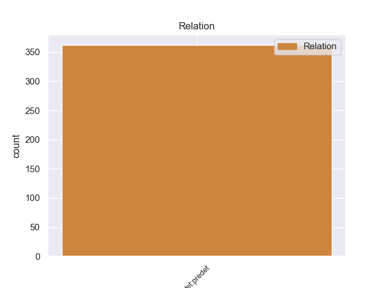
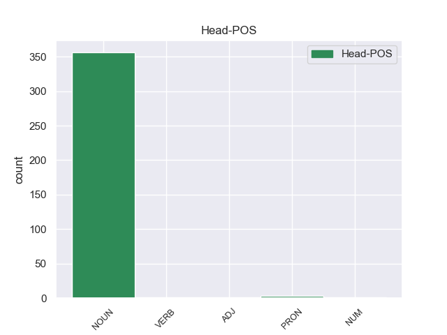
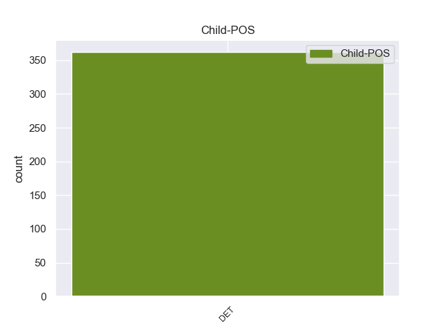

Distribution of features within this leaf



Morphosyntax Rules sorted by frequency.
- When the dependent token is the predeterminer(det:predet) of the head token, and the head token is NOUN the Number needs to be Plur.
1 Referendum _ _ _ _ 0 _ _ _
2 è _ _ _ _ 0 _ _ _
3 una _ _ _ _ 0 _ _ _
4 parola _ _ _ _ 0 _ _ _
5 latina _ _ _ _ 0 _ _ _
6 e _ _ _ _ 0 _ _ _
7 indica _ _ _ _ 0 _ _ _
8 la _ _ _ _ 0 _ _ _
9 votazione _ _ _ _ 0 _ _ _
10 con _ _ _ _ 0 _ _ _
11 la _ _ _ _ 0 _ _ _
12 quale _ _ _ _ 0 _ _ _
13 tutti tutto DET T Gender=Masc|Number=Plur|PronType=Tot 15 det:predet 15:det:predet _
14 i _ _ _ _ 0 _ _ _
15 cittadini cittadino NOUN S Gender=Masc|Number=Plur 0 _ _ _
16 decidono _ _ _ _ 0 _ _ _
17 direttamente _ _ _ _ 0 _ _ _
18 qualcosa _ _ _ _ 0 _ _ _
19 . _ _ _ _ 0 _ _ _
1 ma _ _ _ _ 0 _ _ _
2 il _ _ _ _ 0 _ _ _
3 passo _ _ _ _ 0 _ _ _
4 di _ _ _ _ 0 _ _ _
5 il _ _ _ _ 0 _ _ _
6 cambiamento _ _ _ _ 0 _ _ _
7 in _ _ _ _ 0 _ _ _
8 gli _ _ _ _ 0 _ _ _
9 ultimi _ _ _ _ 0 _ _ _
10 decenni _ _ _ _ 0 _ _ _
11 ha _ _ _ _ 0 _ _ _
12 causato _ _ _ _ 0 _ _ _
13 tremende _ _ _ _ 0 _ _ _
14 pressioni _ _ _ _ 0 _ _ _
15 , _ _ _ _ 0 _ _ _
16 riflesse _ _ _ _ 0 _ _ _
17 in _ _ _ _ 0 _ _ _
18 le _ _ _ _ 0 _ _ _
19 enormi _ _ _ _ 0 _ _ _
20 disparità _ _ _ _ 0 _ _ _
21 di _ _ _ _ 0 _ _ _
22 reddito _ _ _ _ 0 _ _ _
23 a _ _ _ _ 0 _ _ _
24 l' _ _ _ _ 0 _ _ _
25 interno _ _ _ _ 0 _ _ _
26 di _ _ _ _ 0 _ _ _
27 i _ _ _ _ 0 _ _ _
28 paesi _ _ _ _ 0 _ _ _
29 , _ _ _ _ 0 _ _ _
30 con _ _ _ _ 0 _ _ _
31 divari _ _ _ _ 0 _ _ _
32 quasi _ _ _ _ 0 _ _ _
33 da _ _ _ _ 0 _ _ _
34 record _ _ _ _ 0 _ _ _
35 tra _ _ _ _ 0 _ _ _
36 i _ _ _ _ 0 _ _ _
37 più _ _ _ _ 0 _ _ _
38 ricchi _ _ _ _ 0 _ _ _
39 e _ _ _ _ 0 _ _ _
40 tutti tutto DET T Gender=Masc|Number=Plur|PronType=Tot 42 det:predet 42:det:predet _
41 gli _ _ _ _ 0 _ _ _
42 altri altro PRON PI Gender=Masc|Number=Plur|PronType=Ind 0 _ _ _
43 . _ _ _ _ 0 _ _ _
1 Possono _ _ _ _ 0 _ _ _
2 , _ _ _ _ 0 _ _ _
3 rappresentati _ _ _ _ 0 _ _ _
4 unitariamente _ _ _ _ 0 _ _ _
5 in _ _ _ _ 0 _ _ _
6 proporzione _ _ _ _ 0 _ _ _
7 di _ _ _ _ 0 _ _ _
8 i _ _ _ _ 0 _ _ _
9 loro _ _ _ _ 0 _ _ _
10 iscritti _ _ _ _ 0 _ _ _
11 , _ _ _ _ 0 _ _ _
12 stipulare _ _ _ _ 0 _ _ _
13 contratti _ _ _ _ 0 _ _ _
14 collettivi _ _ _ _ 0 _ _ _
15 di _ _ _ _ 0 _ _ _
16 lavoro _ _ _ _ 0 _ _ _
17 con _ _ _ _ 0 _ _ _
18 efficacia _ _ _ _ 0 _ _ _
19 obbligatoria _ _ _ _ 0 _ _ _
20 per _ _ _ _ 0 _ _ _
21 tutti tutto DET T Gender=Masc|Number=Plur|PronType=Tot 23 det:predet 23:det:predet _
22 gli _ _ _ _ 0 _ _ _
23 appartenenti appartenere VERB V Number=Plur|Tense=Pres|VerbForm=Part 0 _ _ _
24 a _ _ _ _ 0 _ _ _
25 le _ _ _ _ 0 _ _ _
26 categorie _ _ _ _ 0 _ _ _
27 a _ _ _ _ 0 _ _ _
28 le _ _ _ _ 0 _ _ _
29 quali _ _ _ _ 0 _ _ _
30 il _ _ _ _ 0 _ _ _
31 contratto _ _ _ _ 0 _ _ _
32 si _ _ _ _ 0 _ _ _
33 riferisce _ _ _ _ 0 _ _ _
34 . _ _ _ _ 0 _ _ _
1 Devi _ _ _ _ 0 _ _ _
2 mantenere _ _ _ _ 0 _ _ _
3 intatte _ _ _ _ 0 _ _ _
4 tutte tutto DET T Gender=Fem|Number=Plur|PronType=Tot 6 det:predet 6:det:predet _
5 le _ _ _ _ 0 _ _ _
6 informative informativo ADJ A Gender=Fem|Number=Plur 0 _ _ _
7 che _ _ _ _ 0 _ _ _
8 si _ _ _ _ 0 _ _ _
9 riferiscono _ _ _ _ 0 _ _ _
10 a _ _ _ _ 0 _ _ _
11 la _ _ _ _ 0 _ _ _
12 presente _ _ _ _ 0 _ _ _
13 licenza _ _ _ _ 0 _ _ _
14 ed _ _ _ _ 0 _ _ _
15 a _ _ _ _ 0 _ _ _
16 l' _ _ _ _ 0 _ _ _
17 esclusione _ _ _ _ 0 _ _ _
18 di _ _ _ _ 0 _ _ _
19 le _ _ _ _ 0 _ _ _
20 garanzie _ _ _ _ 0 _ _ _
21 . _ _ _ _ 0 _ _ _
non-conforming Examples:
1 Per _ _ _ _ 0 _ _ _
2 tutta tutto DET T Gender=Fem|Number=Sing|PronType=Tot 4 det:predet 4:det:predet _
3 la _ _ _ _ 0 _ _ _
4 giornata giornata NOUN S Gender=Fem|Number=Sing 0 _ _ _
5 i _ _ _ _ 0 _ _ _
6 carabinieri _ _ _ _ 0 _ _ _
7 hanno _ _ _ _ 0 _ _ _
8 controllato _ _ _ _ 0 _ _ _
9 decine _ _ _ _ 0 _ _ _
10 di _ _ _ _ 0 _ _ _
11 persone _ _ _ _ 0 _ _ _
12 , _ _ _ _ 0 _ _ _
13 tra _ _ _ _ 0 _ _ _
14 cui _ _ _ _ 0 _ _ _
15 i _ _ _ _ 0 _ _ _
16 cinque _ _ _ _ 0 _ _ _
17 utilizzatori _ _ _ _ 0 _ _ _
18 di _ _ _ _ 0 _ _ _
19 il _ _ _ _ 0 _ _ _
20 box _ _ _ _ 0 _ _ _
21 dove _ _ _ _ 0 _ _ _
22 sarebbe _ _ _ _ 0 _ _ _
23 avvenuta _ _ _ _ 0 _ _ _
24 la _ _ _ _ 0 _ _ _
25 violenza _ _ _ _ 0 _ _ _
26 : _ _ _ _ 0 _ _ _
1 Le _ _ _ _ 0 _ _ _
2 ricerche _ _ _ _ 0 _ _ _
3 di _ _ _ _ 0 _ _ _
4 Gabriella _ _ _ _ 0 _ _ _
5 sono _ _ _ _ 0 _ _ _
6 proseguite _ _ _ _ 0 _ _ _
7 per _ _ _ _ 0 _ _ _
8 tutta tutto DET T Gender=Fem|Number=Sing|PronType=Tot 10 det:predet 10:det:predet _
9 la _ _ _ _ 0 _ _ _
10 mattinata mattinata NOUN S Gender=Fem|Number=Sing 0 _ _ _
11 , _ _ _ _ 0 _ _ _
12 con _ _ _ _ 0 _ _ _
13 elicotteri _ _ _ _ 0 _ _ _
14 , _ _ _ _ 0 _ _ _
15 posti _ _ _ _ 0 _ _ _
16 di _ _ _ _ 0 _ _ _
17 blocco _ _ _ _ 0 _ _ _
18 e _ _ _ _ 0 _ _ _
19 perquisizioni _ _ _ _ 0 _ _ _
20 . _ _ _ _ 0 _ _ _
1 Era _ _ _ _ 0 _ _ _
2 pronta _ _ _ _ 0 _ _ _
3 anche _ _ _ _ 0 _ _ _
4 lei _ _ _ _ 0 _ _ _
5 , _ _ _ _ 0 _ _ _
6 raccontano _ _ _ _ 0 _ _ _
7 in _ _ _ _ 0 _ _ _
8 paese _ _ _ _ 0 _ _ _
9 , _ _ _ _ 0 _ _ _
10 per _ _ _ _ 0 _ _ _
11 il _ _ _ _ 0 _ _ _
12 grande _ _ _ _ 0 _ _ _
13 ritorno _ _ _ _ 0 _ _ _
14 di _ _ _ _ 0 _ _ _
15 tutta tutto DET T Gender=Fem|Number=Sing|PronType=Tot 17 det:predet 17:det:predet _
16 la _ _ _ _ 0 _ _ _
17 famiglia famiglia NOUN S Gender=Fem|Number=Sing 0 _ _ _
18 : _ _ _ _ 0 _ _ _
1 MILANO _ _ _ _ 0 _ _ _
2 - _ _ _ _ 0 _ _ _
3 Il _ _ _ _ 0 _ _ _
4 parco _ _ _ _ 0 _ _ _
5 di _ _ _ _ 0 _ _ _
6 i _ _ _ _ 0 _ _ _
7 Virunga _ _ _ _ 0 _ _ _
8 , _ _ _ _ 0 _ _ _
9 teatro _ _ _ _ 0 _ _ _
10 di _ _ _ _ 0 _ _ _
11 la _ _ _ _ 0 _ _ _
12 tragedia _ _ _ _ 0 _ _ _
13 , _ _ _ _ 0 _ _ _
14 è _ _ _ _ 0 _ _ _
15 conosciuto _ _ _ _ 0 _ _ _
16 in _ _ _ _ 0 _ _ _
17 tutto tutto DET T Gender=Masc|Number=Sing|PronType=Tot 19 det:predet 19:det:predet _
18 il _ _ _ _ 0 _ _ _
19 mondo mondo NOUN S Gender=Masc|Number=Sing 0 _ _ _
20 grazie _ _ _ _ 0 _ _ _
21 a _ _ _ _ 0 _ _ _
22 la _ _ _ _ 0 _ _ _
23 storia _ _ _ _ 0 _ _ _
24 di _ _ _ _ 0 _ _ _
25 Dian _ _ _ _ 0 _ _ _
26 Fossey _ _ _ _ 0 _ _ _
27 , _ _ _ _ 0 _ _ _
28 la _ _ _ _ 0 _ _ _
29 studiosa _ _ _ _ 0 _ _ _
30 americana _ _ _ _ 0 _ _ _
31 che _ _ _ _ 0 _ _ _
32 ha _ _ _ _ 0 _ _ _
33 dato _ _ _ _ 0 _ _ _
34 la _ _ _ _ 0 _ _ _
35 vita _ _ _ _ 0 _ _ _
36 in _ _ _ _ 0 _ _ _
37 il _ _ _ _ 0 _ _ _
38 tentativo _ _ _ _ 0 _ _ _
39 di _ _ _ _ 0 _ _ _
40 salvare _ _ _ _ 0 _ _ _
41 i _ _ _ _ 0 _ _ _
42 gorilla _ _ _ _ 0 _ _ _
43 di _ _ _ _ 0 _ _ _
44 montagna _ _ _ _ 0 _ _ _
45 di _ _ _ _ 0 _ _ _
46 la _ _ _ _ 0 _ _ _
47 zona _ _ _ _ 0 _ _ _
48 . _ _ _ _ 0 _ _ _
1 Ci _ _ _ _ 0 _ _ _
2 sono _ _ _ _ 0 _ _ _
3 1500 _ _ _ _ 0 _ _ _
4 calorie _ _ _ _ 0 _ _ _
5 a _ _ _ _ 0 _ _ _
6 il _ _ _ _ 0 _ _ _
7 giorno _ _ _ _ 0 _ _ _
8 , _ _ _ _ 0 _ _ _
9 abbastanza _ _ _ _ 0 _ _ _
10 per _ _ _ _ 0 _ _ _
11 sopravvivere _ _ _ _ 0 _ _ _
12 , _ _ _ _ 0 _ _ _
13 mentre _ _ _ _ 0 _ _ _
14 tutto tutto DET T Gender=Masc|Number=Sing|PronType=Tot 16 det:predet 16:det:predet _
15 il _ _ _ _ 0 _ _ _
16 resto resto NOUN S Gender=Masc|Number=Sing 0 _ _ _
17 di _ _ _ _ 0 _ _ _
18 lo _ _ _ _ 0 _ _ _
19 Zaire _ _ _ _ 0 _ _ _
20 continua _ _ _ _ 0 _ _ _
21 piano _ _ _ _ 0 _ _ _
22 piano _ _ _ _ 0 _ _ _
23 a _ _ _ _ 0 _ _ _
24 regredire _ _ _ _ 0 _ _ _
25 ... _ _ _ _ 0 _ _ _
26 " _ _ _ _ 0 _ _ _
27 . _ _ _ _ 0 _ _ _